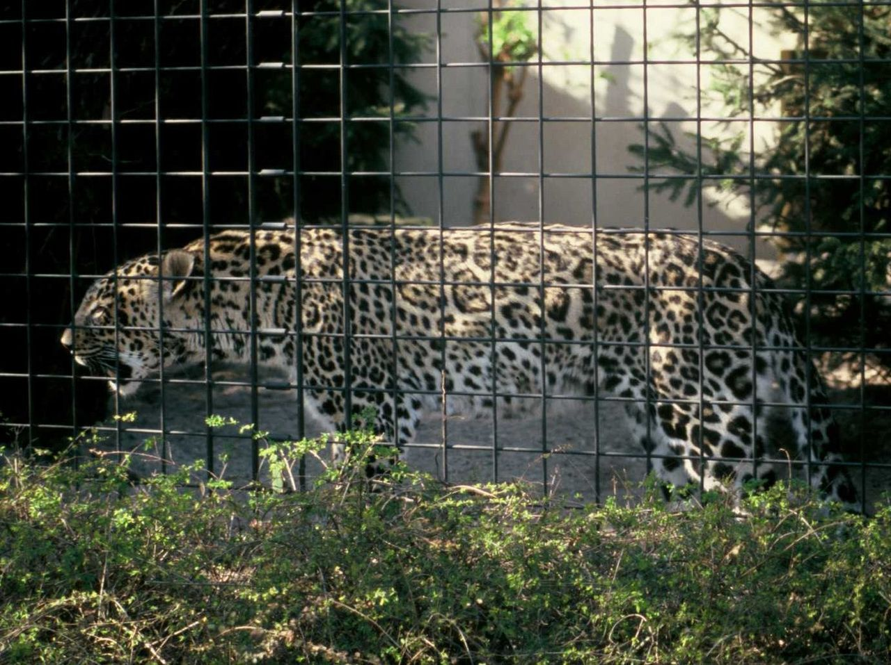
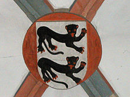

14 интересных фактов о черной пантере
Чёрные панте́ры — тёмноокрашенные особи из рода пантер, представляющих собой генетический вариант окраски — проявление меланизма. Чёрная пантера не является самостоятельным видом, это леопард (азиатский, африканский) или ягуар, но не чёрный тигр, который так и называется
Чёрная окраска пантер является проявлением меланизма, вызванного мутацией гена. Примером
сильного распространения мутации, которая приводит к меланизму, в популяции кошачьих, является популяция
леопарда на территории Малайзии, где около 50 % животных имеют чёрную окраску.
Вообще
среди
больших кошек меланизм обычно является более распространённым в тех популяциях, которые живут в
плотных лесах — при условии недостатка освещения тёмные животные здесь являются менее
заметными, чем на открытой местности, что облегчает им выживание.
Черная пантера — удивительное, грациозное, сильное и независимое создание.
Обитают эти звери
преимущественно в жарких странах Юго-Восточной Азии, где встречаются повсеместно. Встреча с черной
пантерой один на один на её территории не сулит ничего хорошего не только излишне любознательному
туристу, но и опытному охотнику.
.jpeg)
Интересные факты о чёрных пантерах.
- Чёрный цвет шерсти пантер вызван обильным содержанием в ней меланина, который и придаёт шерстинкам насыщенный чёрный оттенок.
- В верованиях многих народов пантеры считаются лесными призраками из-за их впечатляющей окраски и неуловимости.
- Хвост черной пантеры может быть больше метра в длину.
- В среднем пантеры весят по 30-40 кг, но встречаются экземпляры весом и в целую сотню килограммов.
- Большинство черных пантер отличается агрессивным поведением, что в сочетании с их превосходно развитой мускулатурой делает их чрезвычайно опасными хищниками.
-
- В отличие от большинства других хищных зверей, опасающихся приближаться к деревням и городам, черные пантеры безбоязненно это делают. Человека они не боятся, хоть и проявляют при этом разумную осторожность.
- В отличие от некоторых других больших кошек, пантеры любят плавать
- Черные пантеры большую часть времени проводят на земле, однако, они отлично лазают по деревьям.
- После охоты черная пантера обычно наедается до отвала, легко поглощая за раз количество еды, соответствующее трети её веса, после чего несколько дней отдыхает и переваривает пищу.
- Пантера — хищник не только умный, но ещё и терпеливый. Намеченную жертву она может выслеживать час за часом, постепенно подбираясь к ней и выжидая удобного момента для атаки.
- Черные пантеры обладают уникальной способностью изменять свой запах, что позволяет ей обманывать свои жертвы, которые сами идут к ней в лапы, привлеченные запахом, который принимают за запах сородичей.
- Известны случаи, когда черные пантеры успешно охотились даже на молодых аллигаторов.
- Благодаря своим способностям древолазов черные пантеры иногда охотятся на обезьян и птиц
- О своих котятах черные пантеры заботятся до тех пор, когда тем не исполнится два года. При этом молодые пантеры обычно начинают охотиться уже в возрасте шести-семи месяцев.
Неполный меланизм
Близким к меланизму понятием является неполный меланизм или псевдо-меланизм («абундизм») — состояние, при котором усиленная пигментация кожи или других покровов происходит не равномерно, а отдельными участками. Псевдо-меланизм встречается у леопардов[3]. При абундизме, например, пятна или полосы у животных с пятнистой или полосатой окраской покровов могут расширяться вплоть до слияния, которое приводит к так называемому псевдо-меланизму. Меланизм и абундизм чаще всего являются результатом мутаций, но могут возникать и вследствие других факторов, таких как влияние температуры во время беременности, которая может влиять на транскрипцию и трансляцию генов.
В геральдике и мифологии
- Геральдическая пантера всегда изображается «incensed», то есть огнедышащей (разъярённой), с пламенем, вырывающимся изо рта и ушей. Существо описывается как прекрасное и доброе. Когда пантера пробуждается ото сна, она издаёт приятное высокое пение, и восхитительный поток приятно пахнущего дыхания доносится из её рта, так, что все звери следуют за ней (кроме дракона, который боится пантеры и убегает прочь).
- Пантера была эмблемой (badge) английских королей Генриха IV и Генриха VI. Иногда она изображается как обычное животное типа пантеры, иногда (особенно в немецкой геральдике) как существо с четырьмя рогами, коровьими ушами и длинным красным языком в виде пламени.
- На гербе африканской страны Габон две чёрные пантеры держат щит и олицетворяют «бдительность и храбрость главы габонского государства».